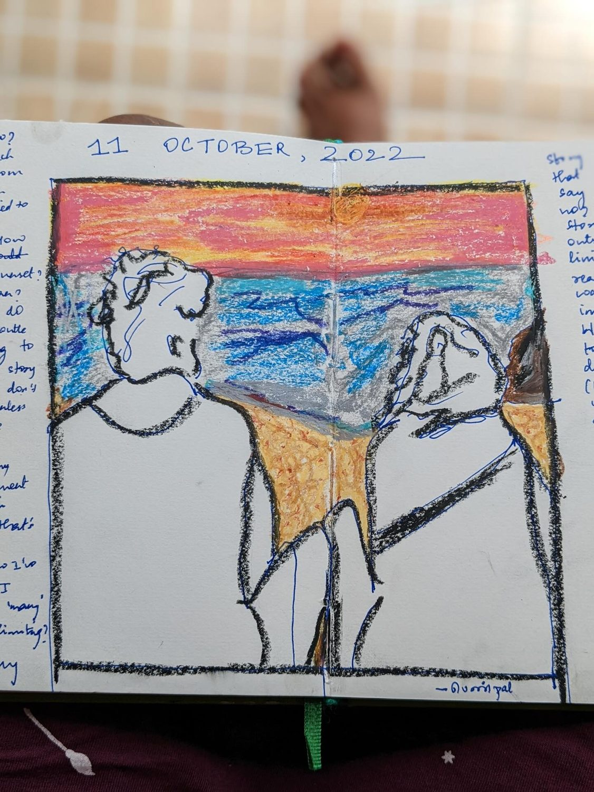
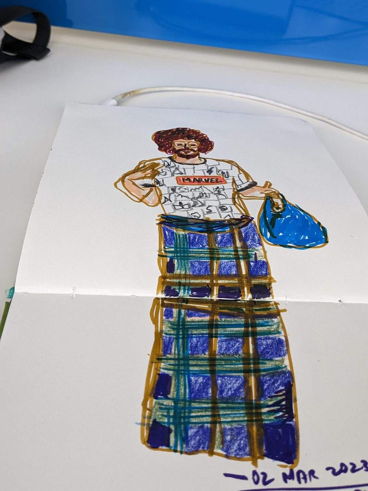
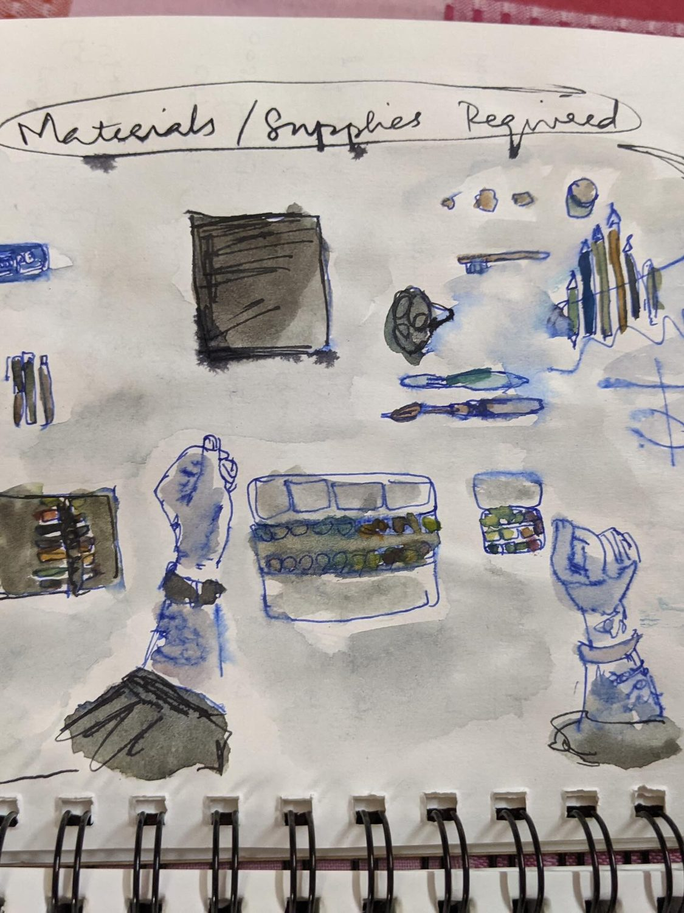

Chapter 01
First, every medium
When I started, I tried everything — watercolour, markers, pastel, gouache, pen. I quickly knew I didn’t love landscapes; I loved faces. I could only draw what sat still in front of me, but I was hungry to work in every material at once.
Beginnings


